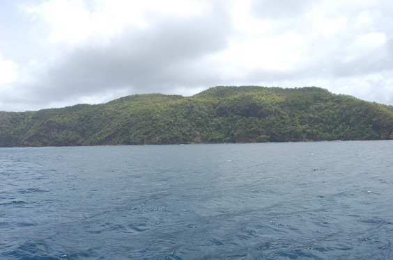

Farben eines Bildes manipulieren
Das folgende Bild hat aufgrund der schwierigen Belichtungsverhältnisse viel von seiner Aussagekraft eingebüßt. Mit GIMP kann das Bild jedoch noch ein wenig aufgewertet werden.|  |
| Abb.
1: Bild mit wenig Kontrasten und matten Farben |
Der erste Schritt wird sein, die Kontraste zu verbessern.
© 2009-2017 Michael Roppel